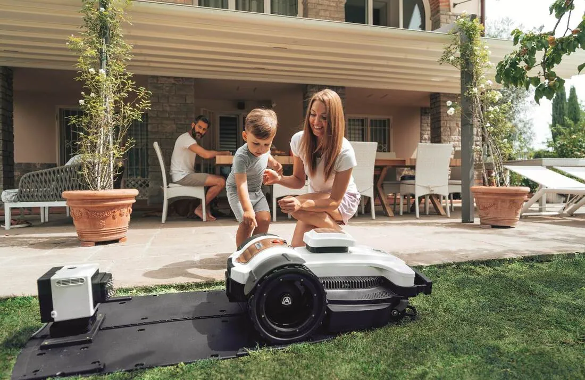
Bezpłatny test w Twoim ogrodzie
Specjalista przyjeżdża z modelami demonstracyjnymi, pokazuje ich pracę na żywo i porównuje różne marki. Wiesz, czy robot poradzi sobie z Twoim trawnikiem, zanim go kupisz.
Zamów wizytę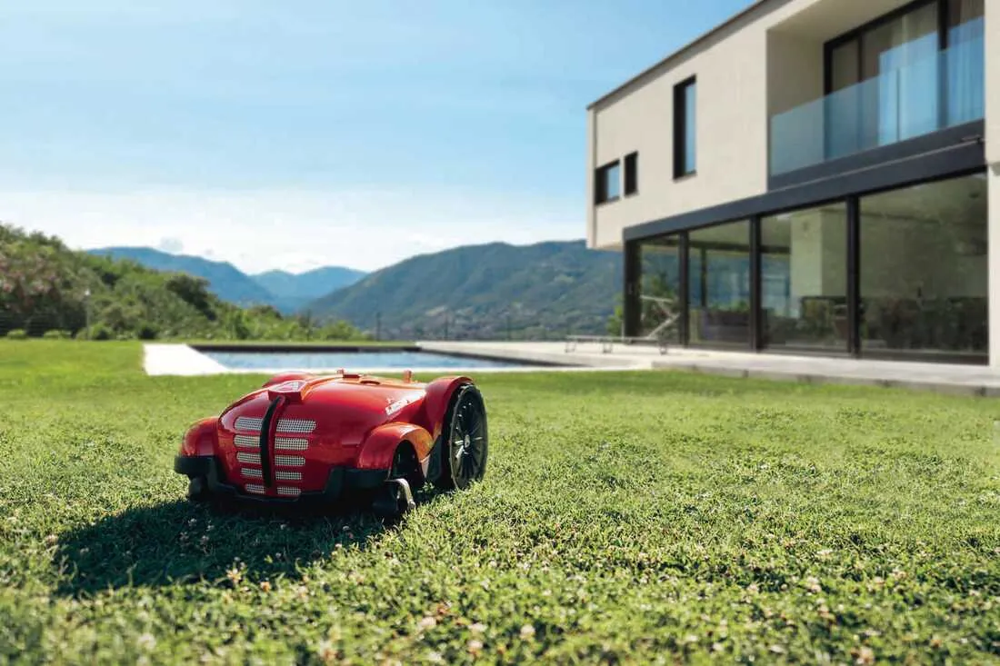
Sprzedaż, instalacja i serwis robotów koszących i basenowych na Podkarpaciu, w Małopolsce i Świętokrzyskiem.
Robot koszący to nie tylko zakup. Pomagamy wybrać model, układamy instalację i opiekujemy się urządzeniem przez kolejne sezony.

Specjalista przyjeżdża z modelami demonstracyjnymi, pokazuje ich pracę na żywo i porównuje różne marki. Wiesz, czy robot poradzi sobie z Twoim trawnikiem, zanim go kupisz.
Zamów wizytę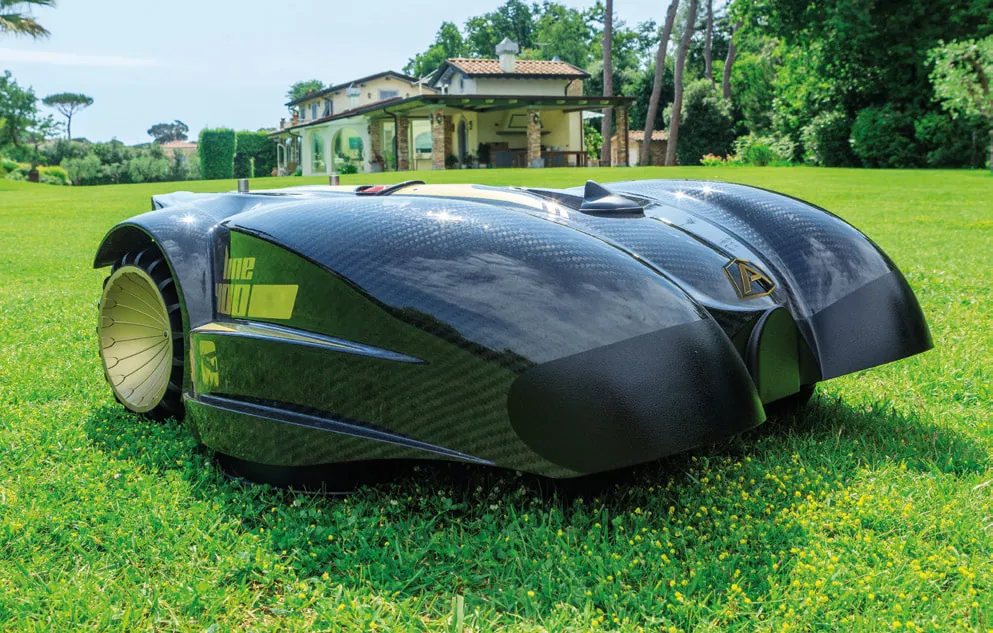
Przewód ograniczający chowamy specjalną maszyną około 5 cm pod trawnikiem. Instalujemy też roboty bez przewodu (RTK) i hybrydy. Na koniec mapa instalacji, raport i szkolenie z aplikacji.
Zapytaj o instalację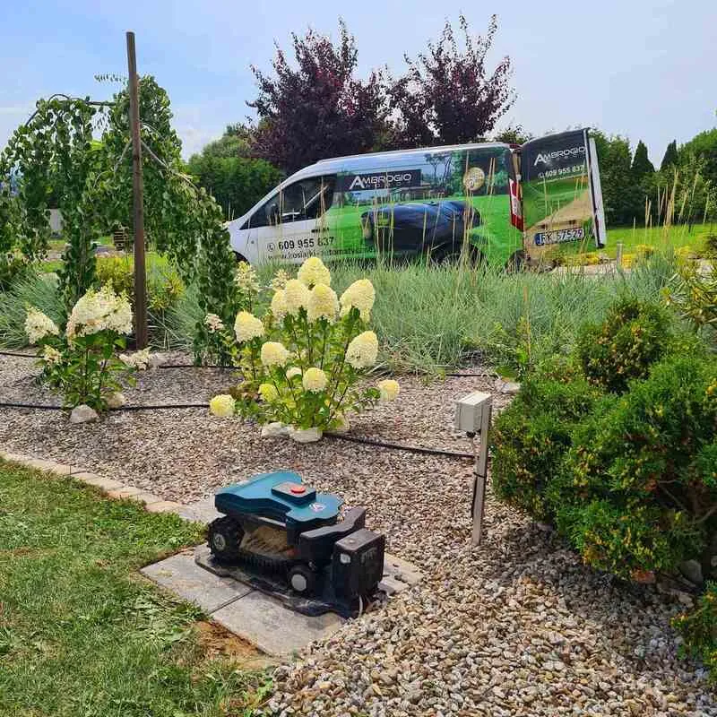
Nasi serwisanci przyjeżdżają do klienta. 86% zgłoszeń i napraw załatwiamy na miejscu, więc robot krócej stoi.
Więcej o serwisie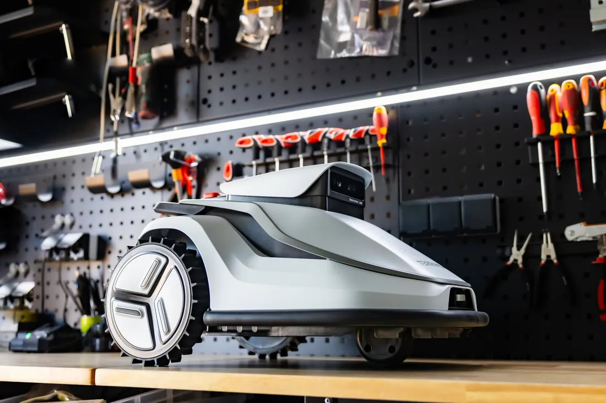
Odbieramy robota, robimy pełny przegląd, przechowujemy go przez zimę i odwozimy przed sezonem. Przegląd zamówisz online.
Pakiety i cenyTerramow, Ambrogio, TechLine, EGO Power+, Cramer oraz roboty basenowe X-Warrior i NEMH2O. Mamy modele demonstracyjne, więc każdy możesz zobaczyć w akcji.
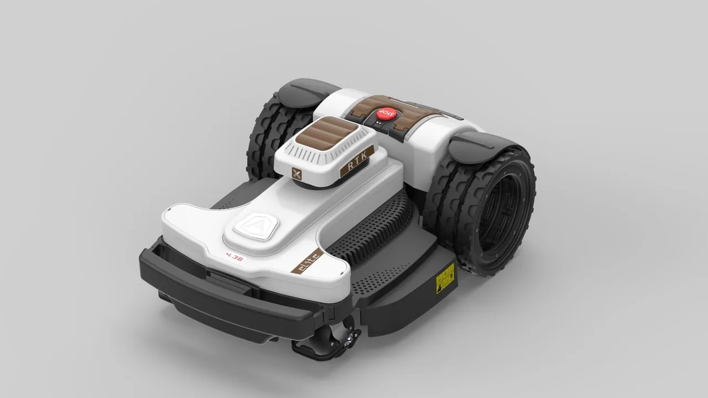
Bez przewodu, pracuje w oparciu o system RTK. Przegubowe zawieszenie, wirtualne mapowanie i 6 lat gwarancji.
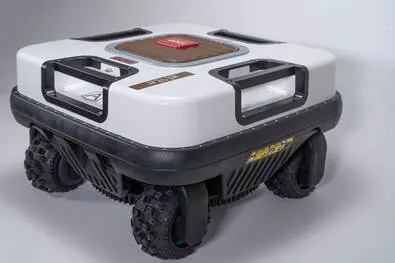
Kosi skarpy o nachyleniu aż do 75%. Wszystkie koła są skrętne, więc obraca się w miejscu.
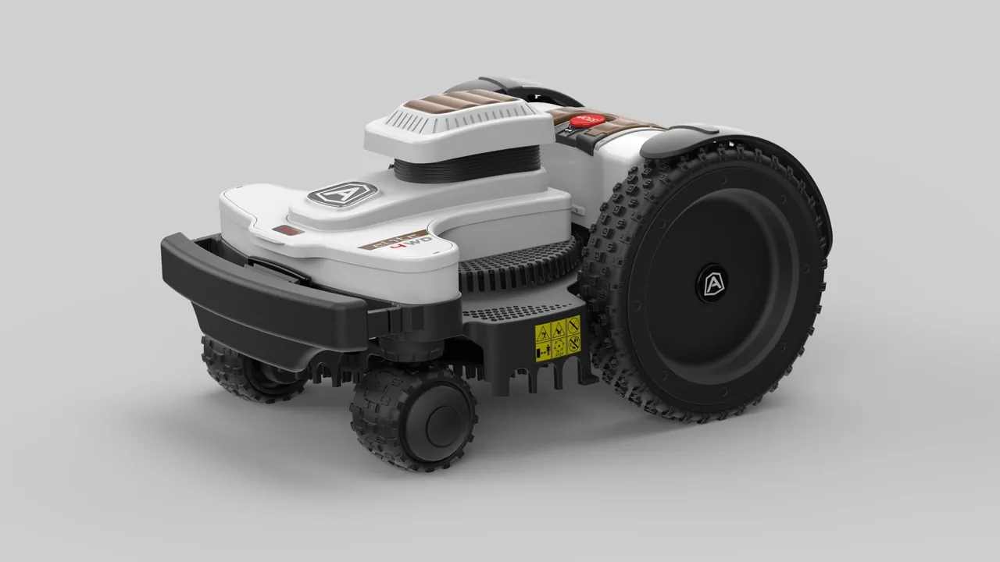
Napęd 4x4, wysokie przegubowe zawieszenie i duże pneumatyczne koła. Prawdziwy off-roader.
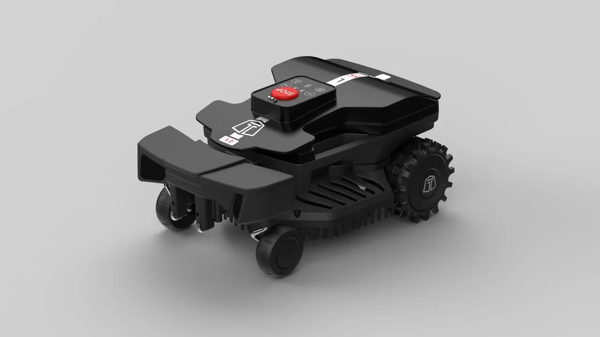
Bez przewodu ograniczającego. Radary wykrywają teren do koszenia i przeszkody przed i pod robotem.
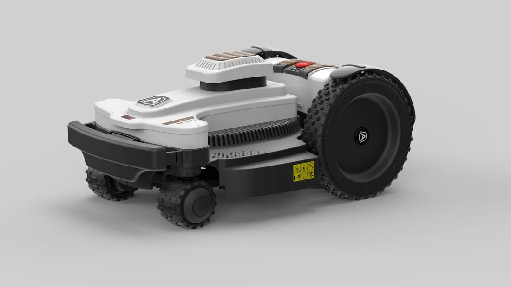
Napęd 4x4 z przegubowym zawieszeniem dla dużych i pofałdowanych ogrodów.
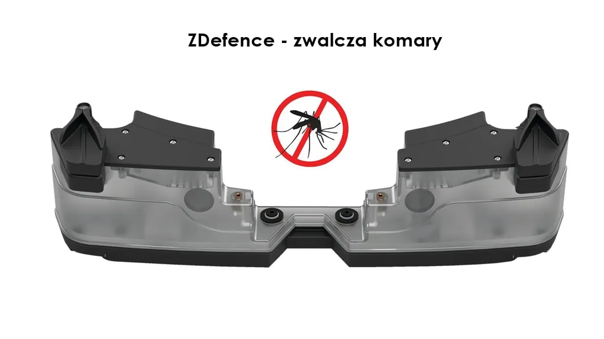
Moduł, dzięki któremu robot pomaga pozbyć się komarów z ogrodu.
Nie wiesz, który wybrać? Porównamy dla Ciebie różne marki i modele.
Pełny przegląd w każdym pakiecie, a robot zimuje w naszej przechowalni od 5 listopada do 10 marca. Różnica to odbiór, dowóz i czyszczenie.
470 zł
Terramow V i MINI, Ambrogio L15 i L20: 370 zł
570 zł
Terramow V i MINI, Ambrogio L15 i L20: 470 zł
720 zł
Terramow V i MINI, Ambrogio L15 i L20: 620 zł
Ceny dla robotów Ambrogio, TechLine, Sunseeker, DCK, Cramer i EGO według cennika na sezon 2026/2027. Nie obejmują części zamiennych; o każdej naprawie informujemy przed jej wykonaniem.
Robot przechodzi dokładne czyszczenie granulkami suchego lodu maszyną Cold Jet Aero2 PCS 60. Bez wody, bez zarysowań i bez rozkręcania części, bezpiecznie dla silników, łożysk i elektroniki.
To ważne, bo mycie robotów Ambrogio i TechLine wodą pod ciśnieniem jest zabronione i grozi utratą gwarancji. Jako pierwsza firma w Polsce wprowadziliśmy tę metodę do branży kosiarek automatycznych.
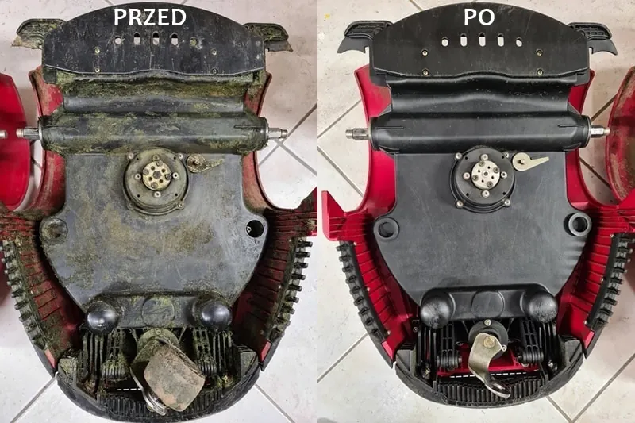
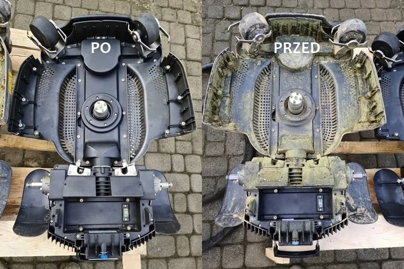
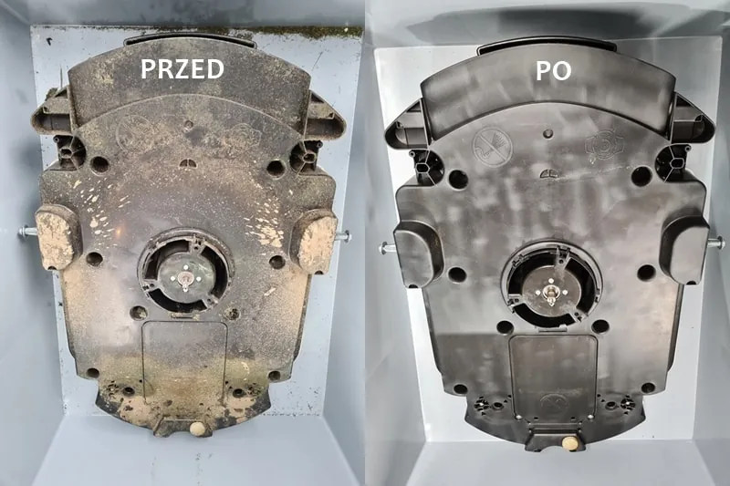
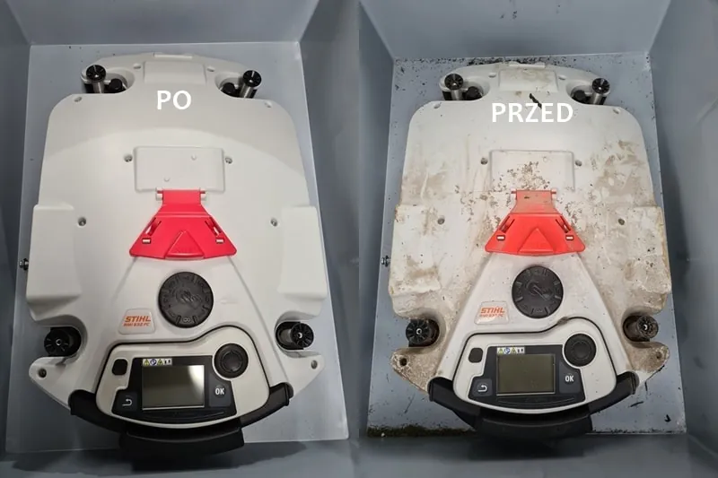
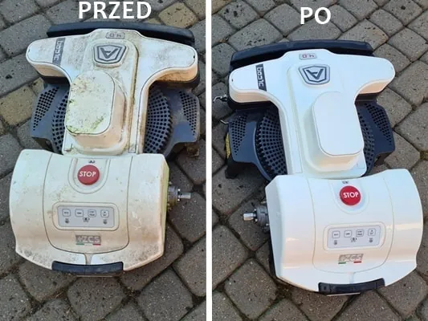
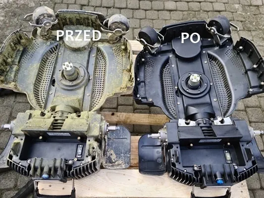
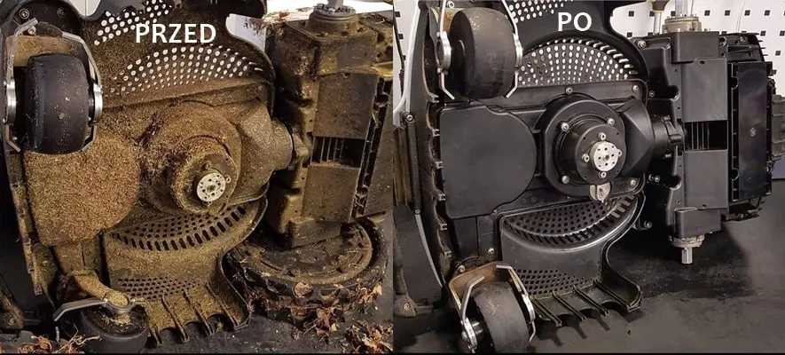
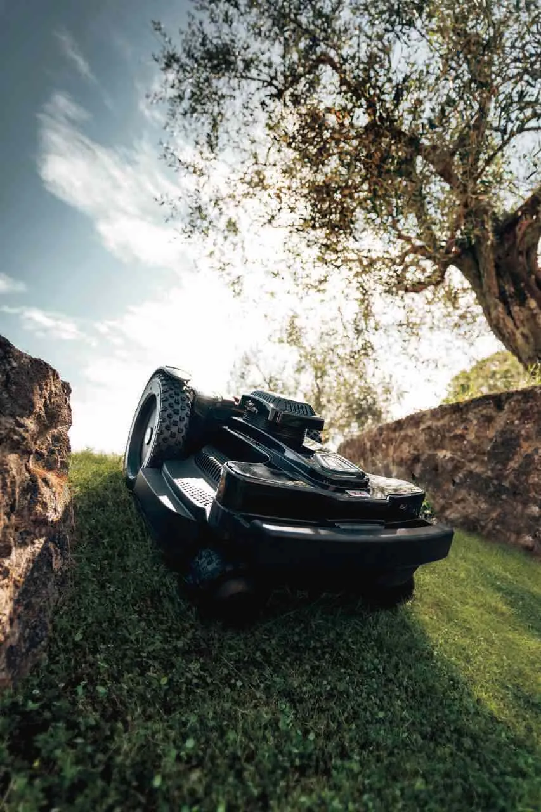
Jesteśmy autoryzowanym serwisem robotów marki Ambrogio i TechLine włoskiego producenta Zucchetti Centro Sistemi. Sprzedajemy też części i akcesoria do Ambrogio, TechLine, Wiper i Stiga.
Samochody serwisowe obsługują klientów na miejscu, w ogrodzie. Mamy za sobą 16 lat instalacji i serwisu robotów koszących.
Zgłoś usterkęRzeszów, Krosno, Przemyśl, Dębica, Mielec, Stalowa Wola, Tarnobrzeg, Łańcut, Leżajsk, Przeworsk, Jarosław, Sanok, Jasło, Brzozów, Lesko, Bieszczady i okolice
Kraków, Tarnów, Nowy Sącz, Zakopane, Nowy Targ, Myślenice, Brzesko, Bochnia, Wieliczka, Gorlice, Krynica, Limanowa i okolice
Kielce, Starachowice, Busko-Zdrój, Sandomierz i okolice
Napisz, jaki masz trawnik i gdzie. Oddzwonimy, żeby ustalić termin prezentacji, instalacji albo serwisu.
+48 609 955 837 biuro@kosiarki-automatyczne.pl TRAFFKA